Selected Publications (First author#, Corresponding author*)(Complete List…)
-
Temporal anti-parity-time symmetry in diffusive transport
Peng Jin#, Chengmeng Wang#, Yuhong Zhou#, Shuihua Yang#, Fubao Yang, Jinrong Liu, Ya Sun, Pengfei Zhuang, Yiyang Zhang, Liujun Xu, Yi Zhou, Ghim Wei Ho, Cheng-Wei Qiu*, Jiping Huang*
Nature Physics 22, 195-201 (2026).
[Paper] [Supp. Mater.] [Phys.org] [Perspective]
-
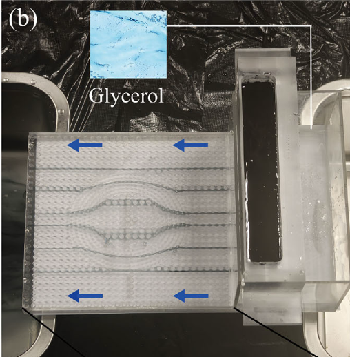
Invisible hydrodynamic sensing via metamaterial shells optimized by machine learning
Yajuan Li#, Yuhong Zhou, Yixi Wang, Wantong Jiang, Fubao Yang*, Peng Jin*, Jiping Huang*
Advanced Materials 38, e19721 (2026).
[Paper] [Supp. Mater.]
-
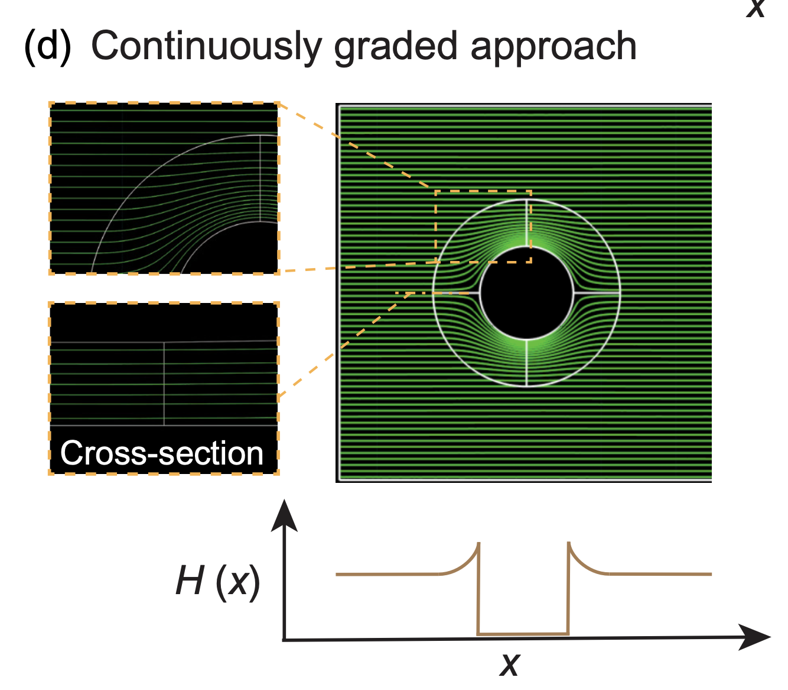
Controlling flow fields with continuously graded hydraulic conductivity
Yuhong Zhou#, Yajuan Li, Peng Jin*, Jiping Huang*
Physical Review Applied 25, 024043 (2026).
[Paper]
-
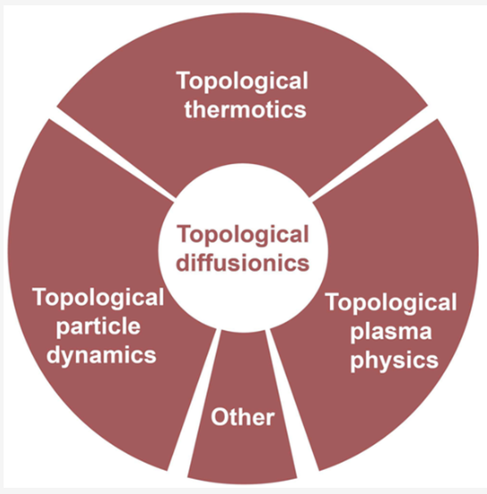
Topology in thermal, particle, and plasma diffusion metamaterials
Zhoufei Liu#, Peng Jin, Min Lei, Chengmeng Wang, Pengfei Zhuang, Peng Tan, Jian-Hua Jiang, Fabio Marchesoni, Jiping Huang*
Chemical Reviews 125, 8655-8730 (2025).
[Paper]
-
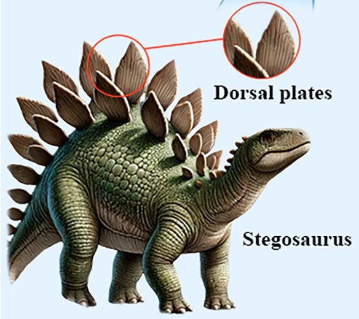
Bioinspired energy-free temperature gradient regulator for significant enhancement of thermoelectric conversion efficiency
Haohan Tan#, Yuqian Zhao, Peng Jin, Xiang Xu, Xinchen Zhou*, Fabio Marchesoni, Jiping Huang*
Proceedings of the National Academy of Sciences of the United States of America (PNAS) 122, e2424421122 (2025).
[Paper] [Supp. Mater.]
-
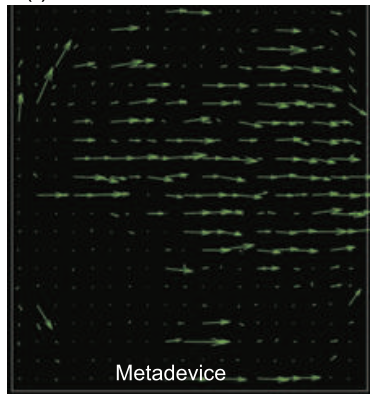
Metafluidic shaping: Simultaneous flow uniformity and drag reduction
Y. H. Zhou#, C. M. Wang#, J. R. Liu, L. S. You, J. B. Ge*, P. Jin*, J. P. Huang*
Europhysics Letters 151, 53001 (2025).
[Paper]
-
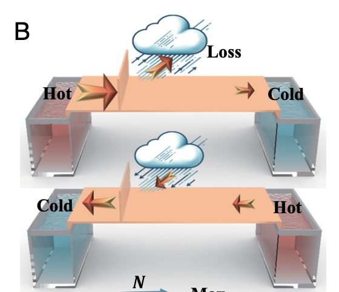
Reconfigurable, zero-energy, and wide-temperature loss-assisted thermal non-reciprocal metamaterials
Min Lei#, Peng Jin, Yuhong Zhou, Ying Li, Liujun Xu*, Jiping Huang*
Proceedings of the National Academy of Sciences of the United States of America (PNAS) 121, e2410041121 (2024).
[Top Ten Advancements in Metamaterials in China (Basic Research)]
[Paper] [Supp. Mater.]
-
Tunable liquid-solid hybrid thermal metamaterials with a topology transition
Peng Jin#, Jinrong Liu, Liujun Xu, Jun Wang, Xiaoping Ouyang, Jian-Hua Jiang*, Jiping Huang*
Proceedings of the National Academy of Sciences of the United States of America (PNAS) 120, e2217068120 (2023).
[Nomination Award for Top Ten Scientific and Technological Advancements of Fudan University]
[Paper] [Supp. Mater.]
-
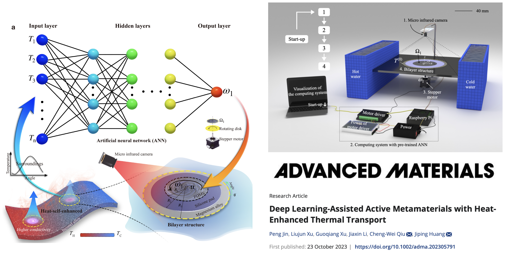
Deep learning-assisted active metamaterials with heat-enhanced thermal transport
Peng Jin#, Liujun Xu, Guoqiang Xu, Jiaxin Li, Cheng-Wei Qiu*, Jiping Huang*
Advanced Materials 36, 2305791 (2024).
[Paper] [Supp. Mater.]
-
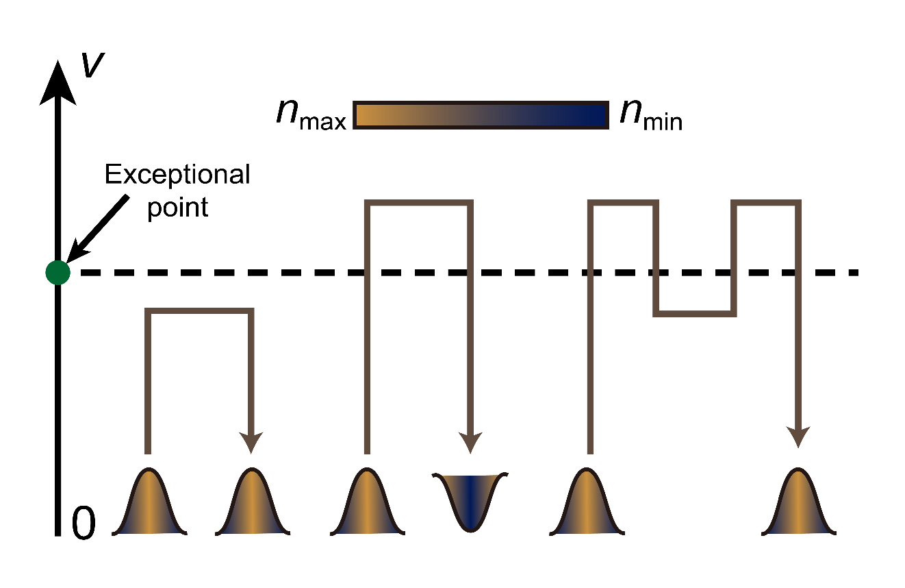
Topological thermal transport
Zhoufei Liu#, Peng Jin, Min Lei, Chengmeng Wang, Fabio Marchesoni, Jian-Hua Jiang*, Jiping Huang*
Nature Reviews Physics 6, 554 (2024).
[Paper]
-
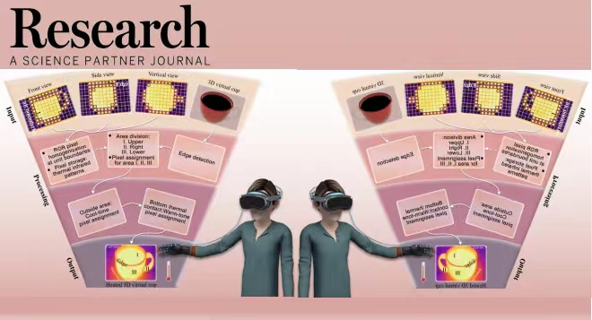
In-situ simulation of thermal reality
Peng Jin#, Jinrong Liu#, Fubao Yang, Fabio Marchesoni, Jian-Hua Jiang, Jiping Huang*
Research 6, 0222 (2023). [IF=11.0]
[Paper] [Supp. Mater.]
-
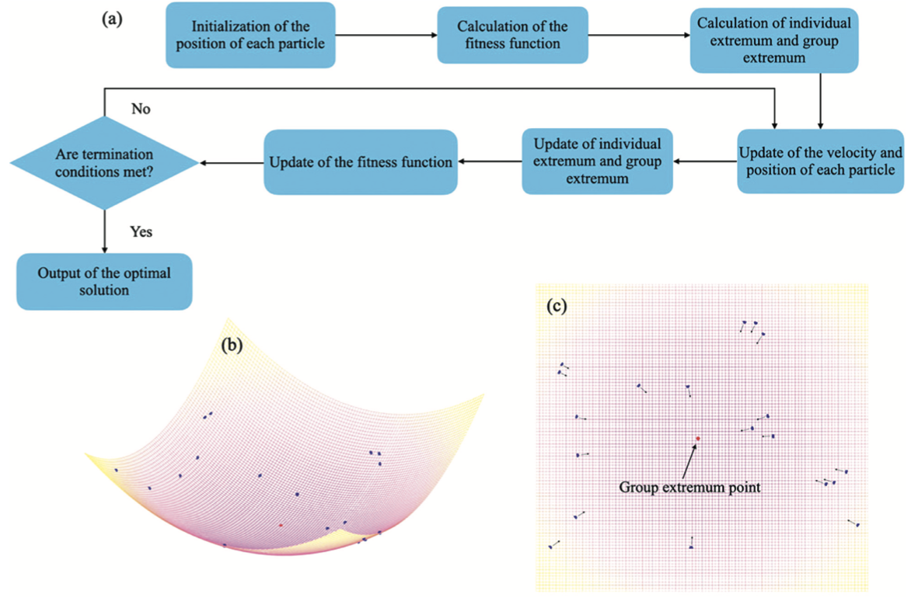
Particle swarm optimization for realizing bilayer thermal sensors with bulk isotropic materials
Peng Jin#,*, Shuai Yang, Liujun Xu, Gaole Dai, Jiping Huang*, Xiaoping Ouyang*
International Journal of Heat and Mass Transfer 172, 121177 (2021). [IF=5.2]
[Paper]
-

Making thermal sensors accurate and invisible with an anisotropic monolayer scheme
Peng Jin#, Liujun Xu*, Tao Jiang, Long Zhang, Jiping Huang*
International Journal of Heat and Mass Transfer 163, 120437 (2020). [IF=5.2]
[Paper]
-
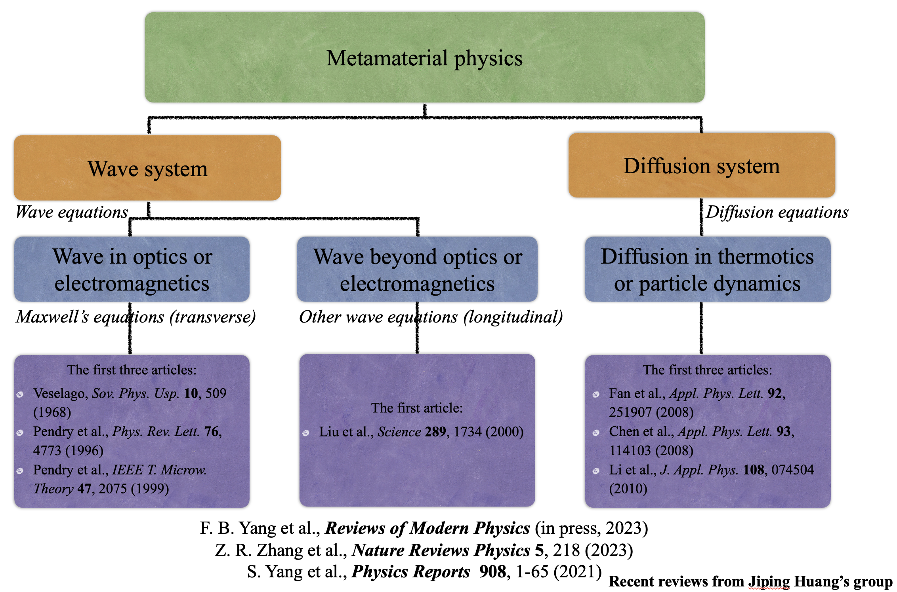
Controlling mass and energy diffusion with metamaterials
Fubao Yang#, Zeren Zhang#, Liujun Xu#, Zhoufei Liu#, Peng Jin#, Pengfei Zhuang, Min Lei, Jinrong Liu, Jian-Hua Jiang, Xiaoping Ouyang, Fabio Marchesoni, Jiping Huang*
Reviews of Modern Physics 96, 015002 (2024).
[Paper]
-
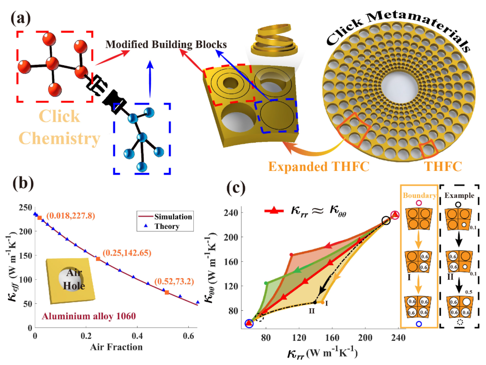
Click metamaterials: Fast acquisition of thermal conductivity and functionality diversities
Chengmeng Wang#, Peng Jin#,*, Fubao Yang, Pengfei Zhuang, Liujun Xu*, Jiping Huang*
Applied Materials Today 41, 102431 (2024).
[Paper]
-
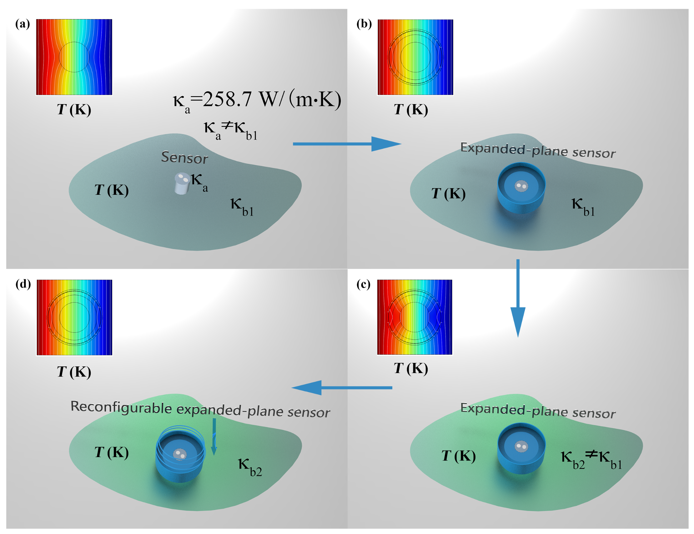
A dynamic thermal sensing mechanism with reconfigurable expanded-plane structures
Haohan Tan#, Haoyang Cai, Peng Jin*, Jiping Huang*
Journal of Applied Physics 135, 214501 (2024).
[Paper]
-
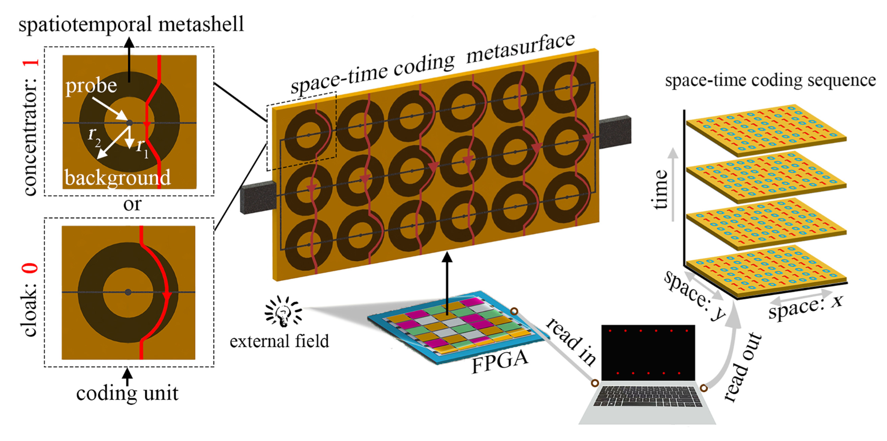
Space-Time Thermal Binary Coding by a Spatiotemporally Modulated Metashell
Fubao Yang#, Peng Jin, Min Lei, Gaole Dai, Jun Wang*, Jiping Huang*
Physical Review Applied 19, 054096 (2023).
[Paper]
-
Black-hole-inspired thermal trapping with graded heat-conduction metadevices
Liujun Xu#, Jinrong Liu#, Peng Jin, Guoqiang Xu, Jiaxin Li, Xiaoping Ouyang, Ying Li, Cheng-Wei Qiu*, Jiping Huang*
National Science Review 10, nwac159 (2023).
[ESI Highly Cited Paper] [Paper] [Supp. Mater.]
-
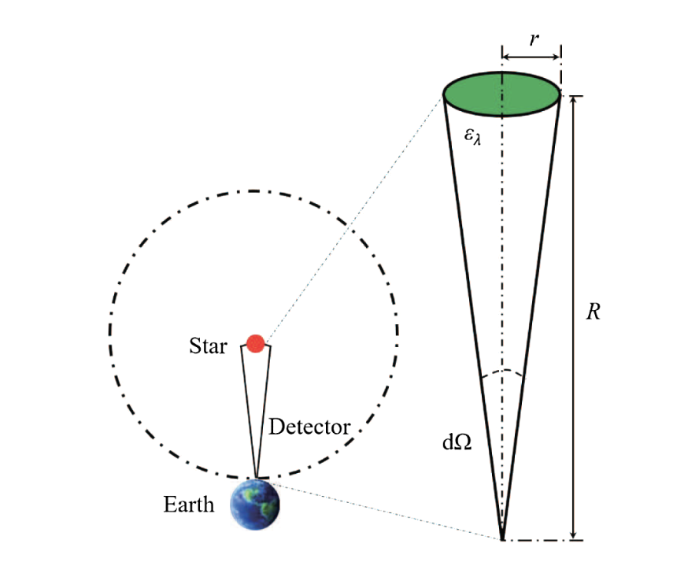
Extracting stellar emissivity via a machine learning analysis of MSX and LAMOST catalog data
Chuanxin Zhang#,*, Tianjiao Li, Peng Jin, Yuan Yuan, Xiaoping Ouyang, Fabio Marchesoni, Jiping Huang*
Physical Review D 106, 123035 (2022).
[Paper] [Supp. Mater.]